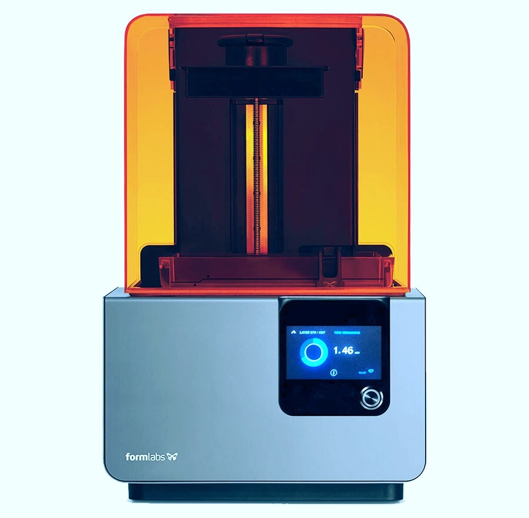
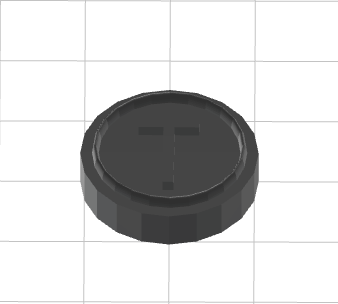

＜3Dプリンターについて＞
3Dプリンター（スリーディープリンター、英語: 3D printer）とは
3DCAD、3DCGデータを元に立体（3次元のオブジェクト：製品）を造形する機器。
通常のプリンターのように紙に平面（二次元）的に印刷する形式や、鋳型を作って造形材を充填・固形化する形式と異なる。
日本語では立体印刷機（りったいいんさつき）[1]とも言う。
通常は積層造形法(additive manufacturing、AM)[2]によるものを指す。
3次元のオブジェクトを造形することを3Dプリンティング（英: 3D printing）、
三次元造形（さんじげんぞうけい）と呼ぶ
＜授業で使用した3Dプリンターについて＞
番号：Formlabs Form 2 3D Printer

＜データの制作過程＞
tinkercad
このソフトを利用して、自分の好きな作品データを作ります
